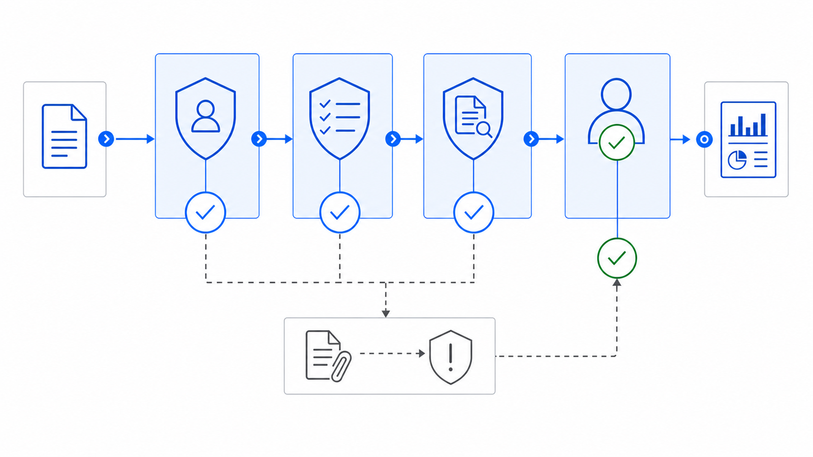

SFS-E29-WRL · PAYMENT RELEASE · REV 2026-07-24 · PRODUCTION
PRODUCTION = runnable end-to-end, CI-backed, full test suite passing. All data fictional and seeded.
Wire & Transfer Release Control
Did two different people release it, to an approved account it can fund?
An operating entity moves money out one packet at a time -- a wire, an ACH or an internal book transfer -- and the wire room has to prove, packet by packet, that the payment is safe to release before it posts, because a wire is irreversible the moment it does. Two different people signed it and the secondary authorization is complete; each signer is on the funding account's register and the amount is within the authorizer's limit; the beneficiary matches an approved template, or a new or changed detail cleared a callback; the routing number passes its own checksum and resolves to the bank named on the form; the funding account exists and covers the amount; the packet is not a second copy of a payment already posted; and it moved through the three workflow stages in order. This engine reads the eight artifacts the release record carries -- the account register, the signer register, the bank directory, the beneficiary register, the wire register, the posted log, the release summary and the release report -- and runs twenty-three deterministic controls over them, grouped into nine families that each answer one question. Is the file complete and the release date legible; were two distinct signers present and the authorization complete and correctly ordered; is each signer authorized on the account and within the dollar limit; does the beneficiary triplet match an approved template or clear a callback; is the routing number well-formed and resolved to the named bank; does the funding account exist and cover the amount; are the packet ids unique and free of an already-posted duplicate; did the packet traverse the workflow stages in order; and does the release summary's releasable flag and the report's counts recompute from the evidence beneath them. It compares every amount and limit as integer cents with exact > and ==, recomputes each releasable determination through the same release kernel that produced the data, and never writes to a source artifact.
A wire form looks complete the moment every field is filled: two names, an account number, a routing number, an amount, a bank. That is exactly why a bad one gets released. None of the ways a payment goes wrong look wrong in a folder of one-page forms. One person both initiated and authorized it, or the packet left the pending tray before the second signature and its date were ever filled in, and the segregation of duties the wire room exists to enforce was never actually enforced. The beneficiary triplet is one digit off the approved template, or a changed bank detail was released with no callback, or the routing number passes its check digit but names a bank it does not resolve to -- the form is complete and the money lands somewhere it should not. And the daily released-wire log calls a packet releasable, or counts a batch as clear, on a determination nobody recomputed from the signatures, limits and templates underneath it. The engine rebuilds every releasable flag from the signers, templates, routing directory and funding balances through the same kernel that produced the data, compares every amount and limit as integer cents with exact > and ==, ships a planted-defect file for every registered control, and states its benchmark as a command rather than a claim. A payment released on one signature, to an unapproved account, or over a funded balance is invisible until someone recomputes the release the wire room already made.
Nine control families run in registry order over each release-control file. The first proves the others had something to read and that the release date is legible, because a control that passes on absent evidence reports assurance it never performed.
an amount a cent over a limit or balance is a break, not a rounding band
What it does for you
plain terms
An operating entity releases outbound payments -- wires, ACH and internal book transfers -- and a wire is irreversible the moment it posts, so every packet has to clear a set of preventive controls before the wire room lets it leave. Two different people have to have signed it with a complete, correctly ordered authorization; each signer has to be on the funding account's register and the amount within the authorizer's limit; the beneficiary has to match an approved template or a new detail has to have cleared a callback; the routing number has to pass its checksum and resolve to the named bank; the funding account has to exist and cover the amount; the packet must not duplicate a payment already posted; and it has to have moved through the three workflow stages in order. Three failures hide inside that, and none of them look wrong on a filled-in form. The same person moves the money end to end, or the packet is released before the second signature is complete. The money goes to the wrong account -- an off-template beneficiary, a changed detail released without a callback, or a routing number that names a bank it does not resolve to. And the release log drifts from the evidence, calling a packet releasable on a determination nobody recomputed. None of these are judgment calls. They are equalities, thresholds, date gates, membership tests and re-derivations -- an amount against a limit with exact >, a triplet against a stored template, a stated flag against its recompute -- which a deterministic control settles better than a folder of one-page forms passed to whoever staffs the wire room this week.
The seeded demo runs every control over every release-control file7. The CLI generates twenty-five fictional release-control files -- one clean baseline and one carrying each of the twenty-four planted defects -- then runs all twenty-three controls over each. The clean file returns PASS with no flags; every defect file returns REVIEW or FAIL and names the control it tripped along with the reason that control exists.
The authority limit and the funding balance are independent thresholds8. One defect file lifts a packet a single cent over the authorizing signer's dollar limit while leaving it well within the funding balance, so sig_within_authority_limit fails and fund_sufficient_balance does not; another drops an account's available balance below a scheduled wire drawn on it, so the funding check fails on its own. Each threshold is checked with exact > at its boundary, proving the two catch different failures.
The release determination is recomputed, not read back9. A defect file flips a packet's stated releasable flag to False and moves the release report's releasable and blocked counts along with it, so the summary and the report agree with each other and only a recompute can see the break. rpt_release_flag_recomputes rebuilds the flag from the signers, templates, routing and funding through the shared release kernel and fails, proving the summary is recomputed from the evidence beneath it rather than trusted as stated.
Functional block diagram
engineering · each block links to its source
Plain terms
Seeded Release Files. fictional release-control files enter the control registry
Structural Precondition. is the release-control file complete and the release date legible
Segregation & Dual Authorization. did two different people sign it with a complete, ordered authorization
Authorized Signer & Limit. is each signer authorized on the account and within the dollar limit
Beneficiary Integrity & Callback. does the beneficiary match an approved template or clear a callback
Routing & Bank Name. is the routing number well-formed and resolved to the named bank
Funding Existence & Sufficiency. does the funding account exist and cover the amount
Duplicate Payment. are the packet ids unique and free of an already-posted duplicate
Workflow Completeness. did the packet traverse the workflow stages in order
Release Rollup Recompute. do the releasable flag and the report counts recompute from the evidence
Registers, Directory & Templates. the artifacts every rule resolves against
Verdict and Findings. every finding, with the reason it exists, ends at a person
Engineering
Seeded Release Files. generate_corpus writes one clean baseline plus one planted-defect file for every registered control, twenty-five files in total. Only the accounts, signers, banks, beneficiary templates, wire packets and posted log are stated as base facts; each packet's releasable determination and the release report's releasable and blocked counts are re-derived through the same wire_engine.release kernel the engine later recomputes with, so the relationships the engine tests are the same relationships that produced the data.
Structural Precondition. One control. FAILs a file missing any of the eight artifact types or carrying a duplicate, or an unreadable as_of date, so no downstream rule holds vacuously on absent evidence.
Segregation & Dual Authorization. Three controls: two distinct signers on initiation and authorization, both signer and date fields present on a scheduled packet, and the authorization dated on or after initiation.
Authorized Signer & Limit. Three controls: the initiator and the authorizer are both on the funding account's signer register, and the amount is within the authorizer's dollar limit, checked with exact >.
Beneficiary Integrity & Callback. Four controls: the cited template exists, the whole (ABA, account, name) triplet matches it, an off-template detail carries a completed callback, and any off-template payee is flagged for a second look.
Routing & Bank Name. Three controls: each packet carries the routing shape its request type requires, an external routing number passes the ABA mod-10 checksum, and it resolves through the bank directory to the receiving-bank name printed on the form.
Funding Existence & Sufficiency. Two controls: every packet draws on an account in the funding-account register, and the amount is within that account's available balance, checked with exact >.
Duplicate Payment. Two controls: no packet id appears twice in the wire register, and no not-yet-posted packet matches an already-posted payment on beneficiary and amount within the duplicate window.
Workflow Completeness. Three controls: every packet sits in a known stage, a posted packet carries its complete secondary-approval evidence, and posted packets and the posted log tie to each other both ways.
Release Rollup Recompute. Two controls: each packet's stated releasable flag recomputes from the release evidence through the shared kernel, and the report's releasable and blocked counts tie the summary flags.
Registers, Directory & Templates. The account register carries each funding account's available balance; the signer register carries each authorized signer, keyed by account, with a dollar authority limit; the bank directory maps each routing number to a receiving-bank name; the beneficiary register carries one approved template per (ABA, account, name); the wire register carries each packet's signers, dates, routing, beneficiary, amount and stage; and the posted log carries one execution record per posted packet. Every segregation, signer, beneficiary, routing, funding, duplicate, workflow and rollup control resolves against these through the shared release kernel.
Verdict and Findings. Findings roll up per release-control file: any FAIL is FAIL, FLAGs without FAILs are REVIEW, clean is PASS. The CLI exit code is the verdict, so a pipeline can gate on it. Reports carry no timestamps or absolute paths, which is what makes the committed report diffable.
Instruction set
every public command
Command
Operation
Output
Exit
Artifacts
python run.py
regenerate the seeded fictional corpus, run all twenty-three controls, write both reports
per-file verdicts and every actionable finding, then the overall verdict
2 for the bundled corpus, which carries a planted defect for every control by design
wire_report.json, wire_report.md, samples/
python -m wire_engine samples
analyze an existing folder of release-control files without regenerating it
per-file verdicts and findings
0 PASS / 1 REVIEW / 2 FAIL / 3 usage
none unless --json or --md is passed
python -m wire_engine samples --generate --quiet
regenerate the corpus and print only the overall verdict
100 percent of controls with a planted defect no control ships without a file demonstrating it firing
Control characteristics
engineering
Plain terms
The engine has no write path and therefore no autonomy to release. It produces findings; a person in the wire room decides whether a packet is released and whether a beneficiary or a callback is chased.
Demo gate. FAIL on the bundled corpus, by design -- it carries a planted defect for every registered control
Severity
Verdict
Action
No findings above PASS
PASS
carry the mechanically clean release-control file into the documented wire-room sign-off before release
One or more FLAG, no FAIL
REVIEW
a human resolves each flag; an off-template beneficiary that cleared its callback but is not on the whitelist lands here for a second look before the wire leaves
One or more FAIL
FAIL
the packet is not released until the failing control is cleared -- one signer on both roles, a beneficiary off template or without a callback, a routing checksum or bank-name mismatch, a funding shortfall, a duplicate, a skipped workflow stage, or a release flag that does not recompute
Read-only: release-control files are parsed and never written back, so the engine cannot introduce the break it reports.
Integer cents throughout, compared with exact > and ==; there is no tolerance band on an amount or a limit, and a cent over is reported as a break.
An amount or limit that should be integer cents but is not produces an AMOUNT_INVALID finding contained to the one row it was read on, rather than being coerced into the number the engine is meant to audit.
One release kernel: the controls and the generator share wire_engine.release, so a releasable determination cannot disagree with the data that produced it.
Segregation of duties is checked as identity and completeness: two distinct signers, both signer and date fields present, and the authorization dated on or after initiation.
Deterministic and byte-stable: same inputs produce the same findings in the same order, with no timestamps or absolute paths in any output.
Absent evidence is never a passing control; a missing artifact fails completeness rather than letting the controls that read it pass unread.
Operating limits
what it refuses to do
The engine never releases a payment, initiates or authorizes a wire, places a callback, contacts a bank or a beneficiary, or writes to a source artifact. It reads the release-control file and stops.14
It reads the eight artifacts the release record emits. It does not connect to a bank, a payment rail, a general ledger or a wire-transfer system, and it books no cash entry -- where the transfer lands in the ledger is a separate engine's question.15
It proves a packet clears the mechanical gates -- two distinct authorized signers, an approved or called-back beneficiary, a resolved routing number, a funded account -- not that the beneficiary is the party the entity truly meant to pay or that a callback actually reached the counterparty. That judgment is the wire room's.16
It checks the amount against the authority limit and available balance the file carries; it does not decide whether that limit is the right one for the signer or whether the balance on file is current as of release.17
It takes the routing directory, beneficiary templates and posted log at face value: it confirms the packets reconcile against them, not that a bank-directory entry is real or a posting actually settled. All shipped data is fictional and the release period is set in a fictional future.18
See it run
control architecture

The Wire & Transfer Release Control tile states the question that has to hold packet by packet: two different people released it with a complete authorization, to a beneficiary on an approved template or one that cleared a callback, over a routing number that resolves to the named bank, from a funding account that covers the amount, free of a duplicate, with every releasable flag recomputed from the evidence beneath it.
One conversation: you describe the work that consumes your team's month; we tell you plainly what this engine can take over, what it can't, and what a scoped first phase would cost. Your people keep approval authority.